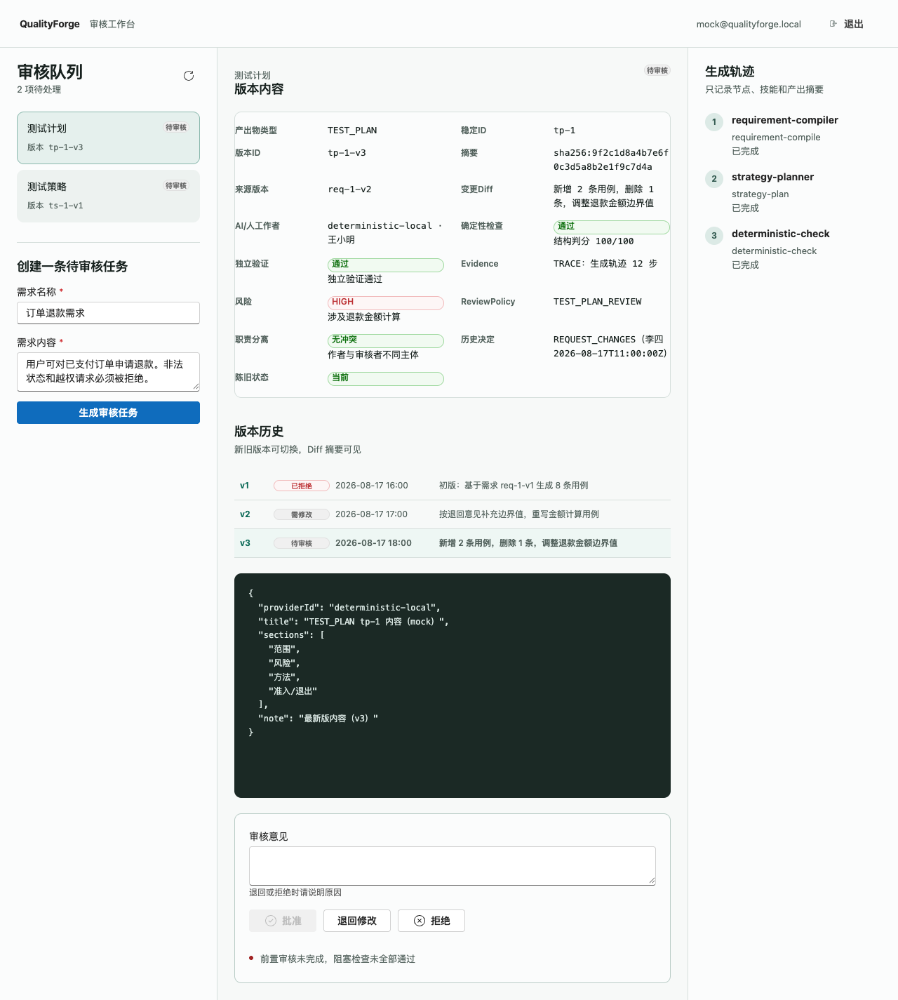
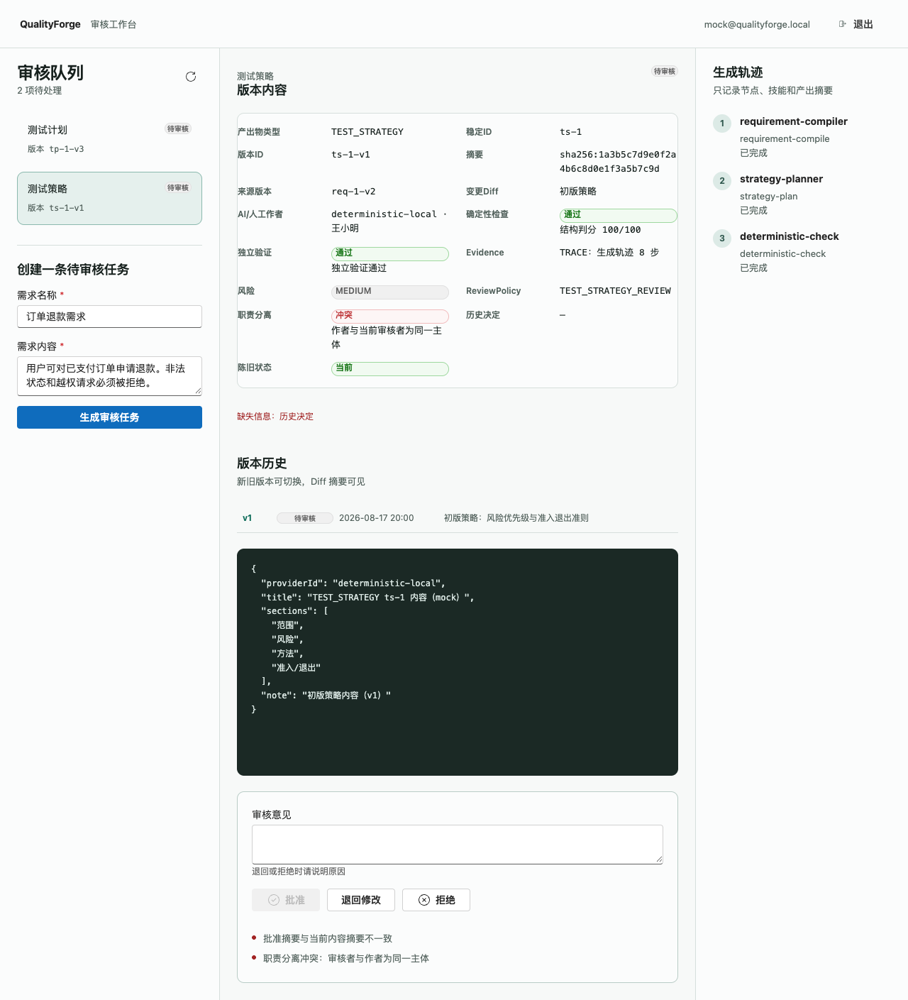

QualityForge · M1 需求与审核收口
快速复核入口
M1-F1 前端轨实施结果与证据索引。打开即可核对验收条目、运行门禁证据与遗留事项，无需搭建环境。
M1-F1 已完成
15
审核台最低信息项
5
禁用原因类别
33
vitest 用例 · 全绿
8
Playwright 冒烟 · 全绿
验收条目对账
| 条目 | 内容 | 证据 | 状态 |
|---|---|---|---|
| 前端 1 | 审核台呈现 Page-Map §3 最低信息 | ReviewDetail 渲染 15 项；Playwright 冒烟「15 项完整渲染」绿 | 已完成 |
| 前端 2 | 批准禁用态渲染可见原因 | DecisionPanel 渲染 5 类原因；vitest 6 用例；Playwright 禁用态+原因冒烟绿 | 已完成 |
| 前端 3 | 版本历史视图 + Diff 摘要 | VersionHistory 新旧切换；Playwright 版本切换冒烟绿 | 已完成 |
| 前端 4 | vitest 组件测试 + Playwright 冒烟 | 33/33 vitest 绿；8/8 Playwright 绿（含全链旅程与版本正文联动）；CI frontend.yml 已含 Playwright step | 已完成 |
| 集成 | 浏览器端「生成→审核→退回→复核」闭环 | Playwright 冒烟第 4 条覆盖退回后状态变更（mock 模式） | 已完成 |
运行门禁证据
| 门禁 | 结果 |
|---|---|
| vitest | 7 个测试文件 · 33 用例 · 33 passed（22:31 实测） |
| typecheck | tsc --noEmit · 无错误 |
| build | vite build · 376.55 kB js · 2136 模块 |
| Playwright | 8 条冒烟 · 8 passed（含全链旅程、版本正文联动）· 系统 Chrome |
| 截图证据 | 4 张界面截图存 DELIVERY/evidence/（队列+15项信息、禁用原因、版本历史、双原因） |
本地复跑：cd frontend && npm run test && npm run typecheck && npm run build && npx playwright test
界面证据



遗留事项
| 编号 | 内容 | 责任人 | 状态 |
|---|---|---|---|
| L1 | 契约变更：approveDisabledReason 等禁用原因字段待写入 32-API规范.yaml（墙话题发起，前端 mock 已按假设形态预演） | lingma + autoclaw | 待墙话题 |
| L2 | 来源版本/确定性检查/独立验证/Evidence 数据源在契约层缺失，前端当前以 mock 渲染，真实数据待后端补齐 | lingma | 待后端 |
| L3 | 摘要无语义化呈现（仅 hex 串），随 M1-B1 契约变更一并处理 | lingma + autoclaw | 待排期 |
| L4 | N1 落账提交（Makefile + 今日交付物）待用户批准，由 lingma 执行后 P0-1 方可标 CLOSED | lingma | 待用户批准 |
验收口径（摘录自计划 v1.1）
- 审核台 12 项最低信息Page-Map §3 原文共 15 项：产出物类型/稳定ID/版本ID/摘要、来源版本、变更Diff、AI/人工作者、确定性检查、独立验证、Evidence、风险、ReviewPolicy、职责分离、历史决定、陈旧状态。
- 批准禁用原因四类权限不足 / 陈旧版本 / 前置审核未完成 / 摘要不一致（+ Page-Map §3 职责分离冲突）。前端禁用不是授权边界，服务端仍校验。
- 版本历史视图新旧版本切换查看，Diff 摘要可见；完整 Diff 归 M2。
- vitest + Playwrightvitest 组件测试覆盖 2/3（已超额）；Playwright 覆盖「生成→审核→退回→复核」冒烟并纳入 frontend workflow。